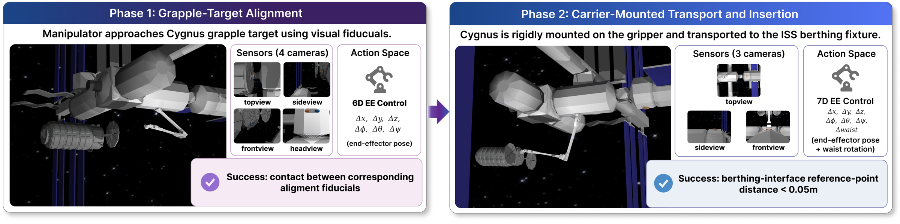
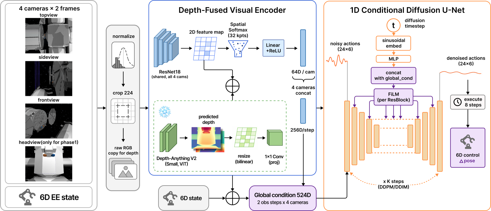

Aerospace Science and Technology
2026 · Under revision
Depth-Fused Imitation Learning for Manipulator-Assisted Spacecraft Berthing
A depth-fused diffusion policy for two-phase spacecraft berthing, designed to remain robust when individual camera views are lost during terminal manipulation.

